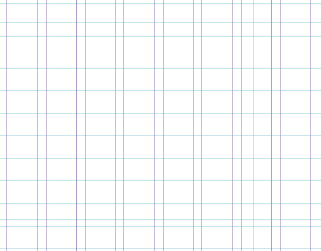
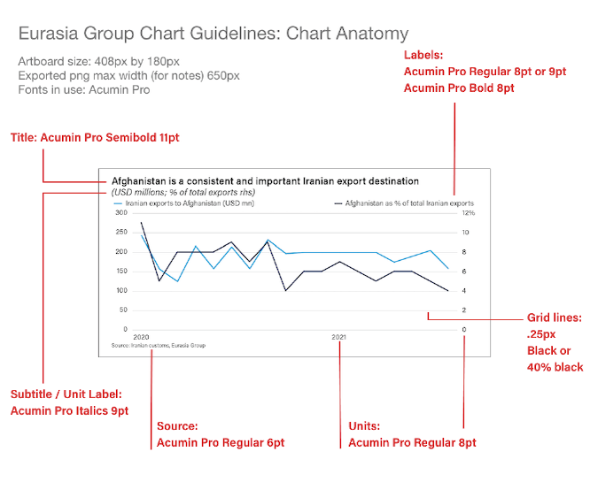
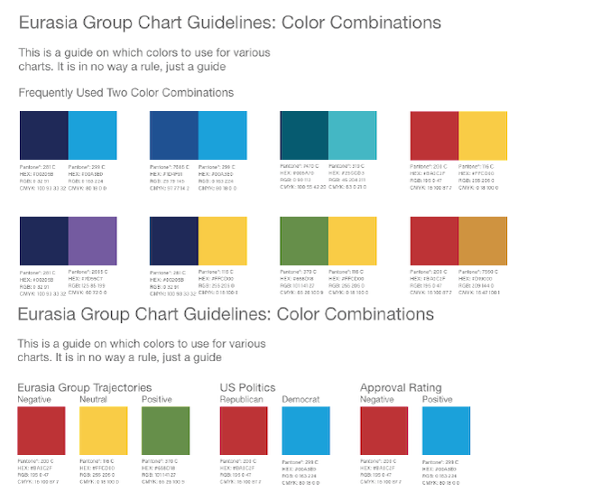
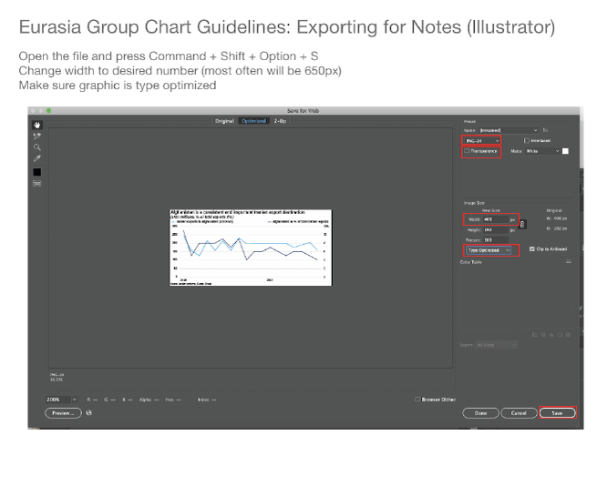
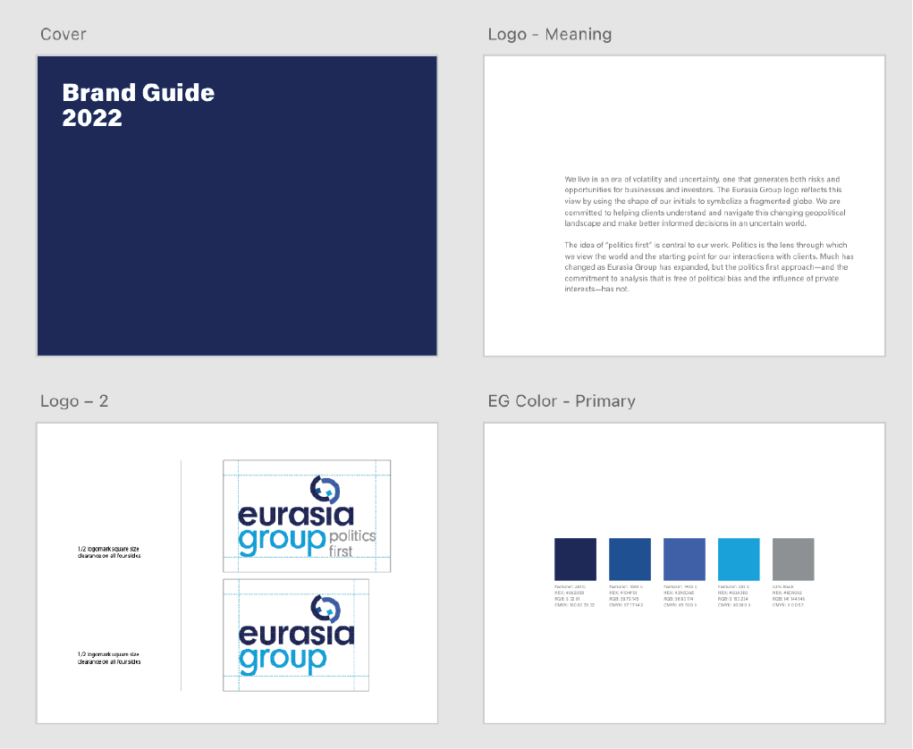
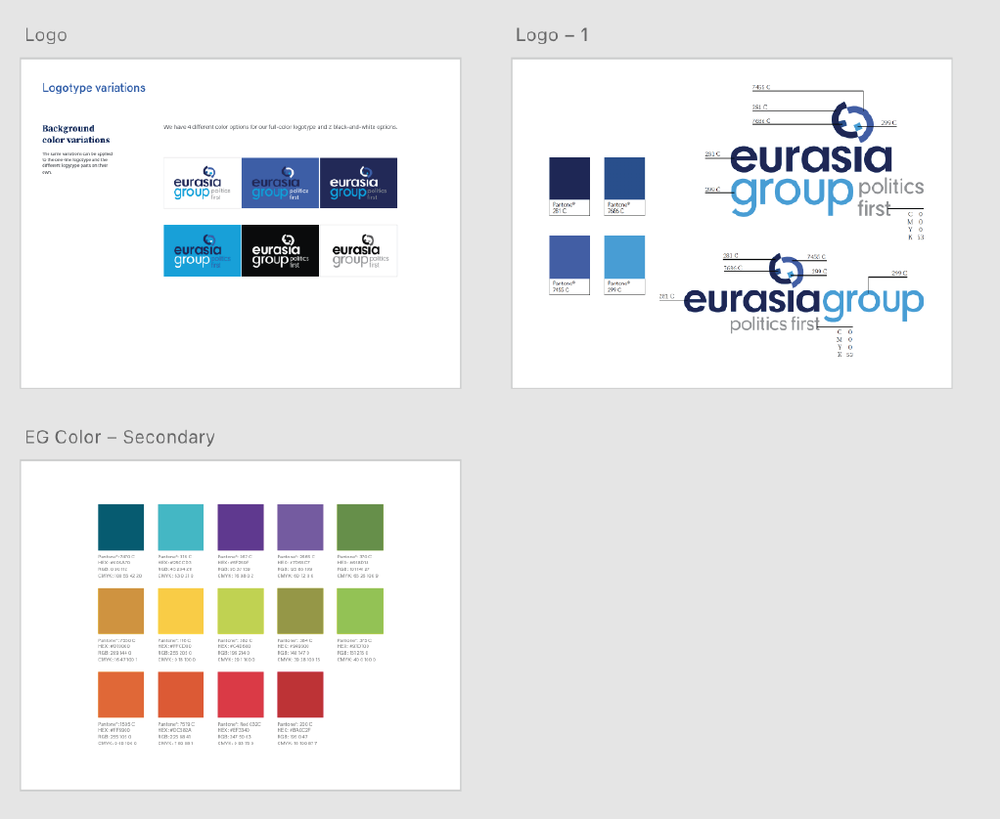
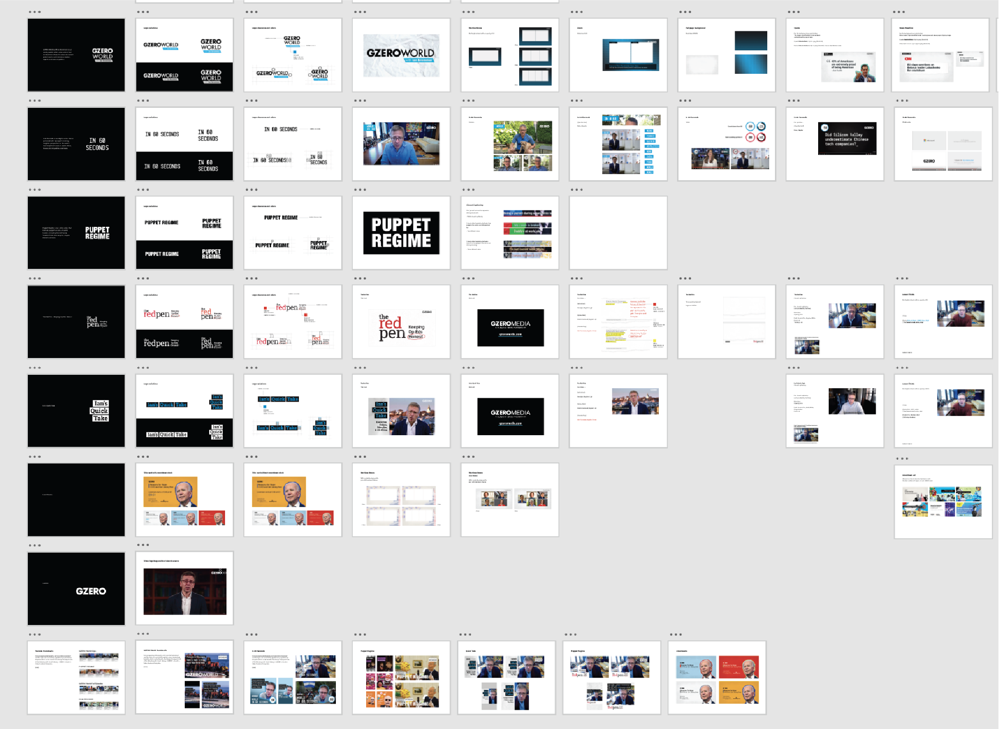

Ari Winkleman

Guidelines
I developed guidelines for brand, video, and charts that the Design team uses to keep our work consistent and flexible. They also give analysts the tools to create their own charts and assets, and provide external partners with a clear reference point. The guides live in shared documents that are easy to update and collaborate on, so edits and improvements happen as the brand evolves. Each one is a living resource that helps maintain quality and consistency across the company’s work.





